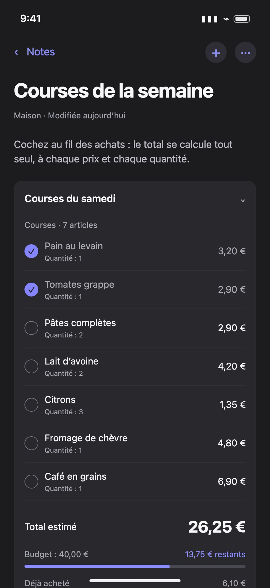
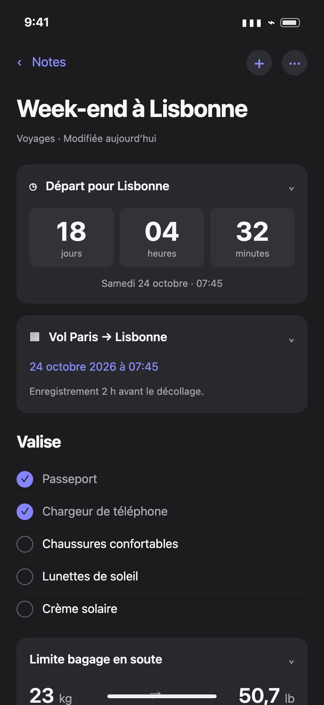
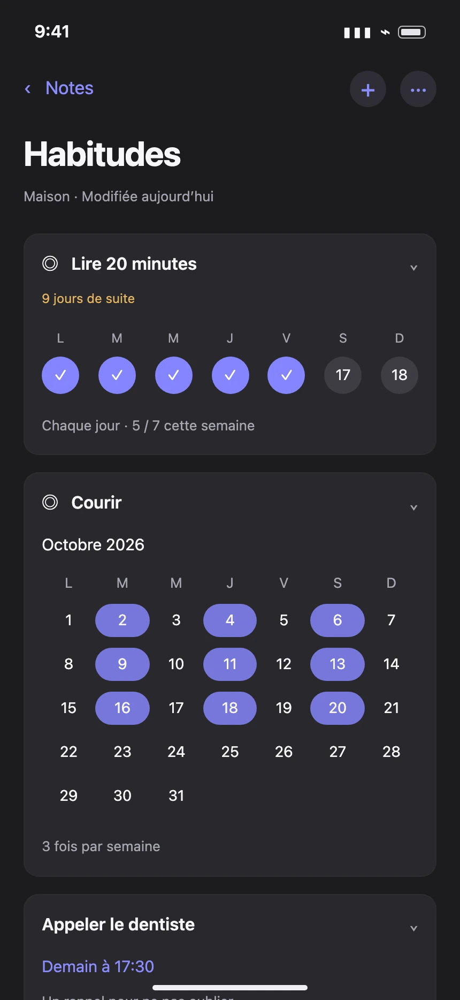
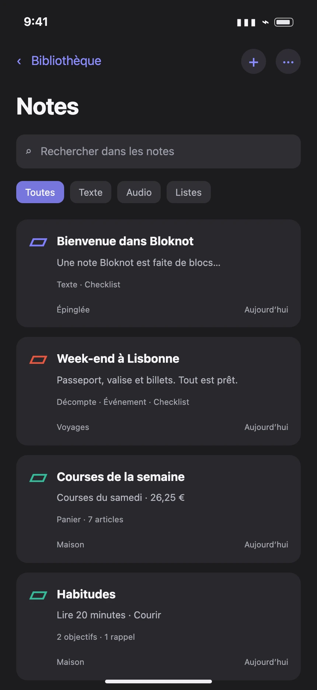

Capturez à votre façon.
Un texte, une note vocale, une photo ou un dessin. Ne laissez plus filer vos idées.
Écrivez, enregistrez, organisez. Assemblez des blocs qui font bien plus que garder vos idées. Tout votre quotidien, dans un seul carnet.



Pensé pour vos idées. Prévu pour vos appareils Apple.
Une idée à capturer, un voyage à préparer, des courses à faire. Bloknot s’adapte à ce que vous avez en tête.
Un texte, une note vocale, une photo ou un dessin. Ne laissez plus filer vos idées.
Ajoutez une checklist, un rappel ou un budget à la même note. Chaque bloc fait sa part.
Dossiers, étiquettes, favoris et recherche. Vos notes ont une place, vos idées aussi.
Rassemblez les informations et les petits outils dont vous avez besoin, là où vous en avez besoin.
Compte à rebours, horaires du vol, valise à cocher et conversion du poids du bagage : votre voyage commence dans une note.
Ajoutez les prix et les quantités, cochez vos achats et suivez le total face à votre budget. Au restaurant, partagez aussi l’addition.
Fixez une fréquence, validez vos journées et suivez vos séries. Vos objectifs restent à côté de vos rappels du quotidien.
Capturez une idée en audio et retrouvez sa transcription dans la même note. Par défaut, la transcription se fait sur l’appareil.
Du premier mot aux détails qui comptent, choisissez les blocs qui donnent vie à vos notes.
Posez vos idées, simplement.
Structurez vos notes en un instant.
Regroupez ce qui va ensemble.
Déroulez vos étapes dans l’ordre.
Cochez, avancez, gardez le fil.
Ajoutez une image ou comparez-en deux.
Enregistrez une idée et retrouvez ses mots.
Esquissez directement dans vos notes.
Une action, une date, une notification.
Le rendez-vous et tout ce qu’il faut retenir.
Suivez une durée ou une date à venir.
Gardez la bonne personne dans le contexte.
Une adresse, une carte, une raison d’y aller.
Suivez vos progrès et vos séries.
Courses ou restaurant : le total se calcule.
Suivez dépenses, paiements et budget.
Visualisez la répartition de vos dépenses.
Gardez un œil sur vos soldes.
Poids, volumes, distances, devises et plus.
Importez un fichier ou numérisez un papier.
Retrouvez vos liens avec leurs aperçus.
Conservez mots de passe et codes chiffrés.
22 blocs à découvrir

Classez vos notes dans des dossiers et des dossiers intelligents, ajoutez des étiquettes et épinglez ce qui compte.
Recherchez dans vos notes et vos transcriptions, puis affinez par dossier, étiquette ou type de contenu.
Travaillez hors ligne. Activez la synchronisation iCloud pour retrouver vos notes sur vos appareils compatibles.
Partagez, exportez en Markdown ou en texte, sauvegardez votre carnet et restaurez-le quand vous en avez besoin.
Donnez une durée de vie aux notes temporaires, retrouvez les notes supprimées dans la corbeille et importez un carnet existant.
Widgets, écran verrouillé, Centre de contrôle et raccourcis Siri : votre prochaine note vocale est à portée de main.
Pas de compte à créer, pas de publicité, pas de suivi de votre activité. Bloknot ne collecte pas vos notes.
Vos notes sont stockées localement. La synchronisation est facultative et utilise la base privée de votre propre compte iCloud.
Verrouillez vos notes et gardez vos codes dans des blocs Accès chiffrés. Déverrouillez avec votre code ou Face ID.
Autorisations à la demande, sauvegardes, exports et suppression : c’est vous qui décidez ce que vous conservez.
Pour tout le reste, nous sommes à votre écoute.
Contacter Carib Tech StudioBloknot arrive bientôt. La date de lancement n’est pas encore annoncée. Vous pourrez retrouver ici le lien officiel de téléchargement dès sa disponibilité. Pour demander à être prévenu, écrivez-nous par e-mail.
Bloknot est prévue pour iPhone, iPad et Mac. La compatibilité précise et les versions de système requises seront indiquées sur la fiche App Store au lancement.
C’est une note dans laquelle vous combinez du texte et des outils utiles : checklist, audio, rappel, budget, document, dessin… Ajoutez, déplacez et dupliquez les blocs pour composer votre note à votre façon.
Aucun compte Bloknot n’est nécessaire. Vous pouvez écrire et consulter vos notes hors ligne. Certaines fonctions, comme iCloud, les cartes, les aperçus de liens ou les taux de change, ont besoin d’Internet.
Ils restent sur votre appareil et, si vous l’activez, dans votre compte iCloud. L’éditeur n’y a pas accès. La transcription se fait par défaut sur l’appareil ; le recours aux serveurs d’Apple nécessite votre autorisation. En savoir plus sur la confidentialité.
Oui. Vous pouvez exporter vos notes en Markdown ou en texte, conserver vos fichiers audio et créer une archive de votre carnet. Les sauvegardes permettent de restaurer vos notes. Les secrets des blocs Accès ne sont jamais exportés en clair.
Les modalités et le prix seront annoncés au lancement et affichés sur l’App Store avant tout téléchargement ou achat.
Bloknot arrive bientôt sur iPhone, iPad et Mac.
Votre nouveau carnet n’attend plus que vous.
Ouvre votre messagerie pour nous envoyer votre demande.
Le lien App Store sera ajouté ici dès le lancement.